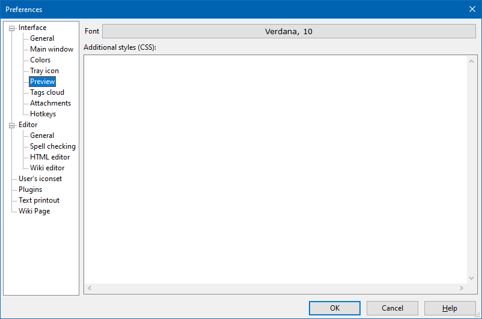

Interface - Preview

Controls of this section are responsible for the general look of HTML pages and wiki pages in preview mode. Here one can set the default font face and size (the Font button) as well as add custom CSS styles which will be used when rendering all notes of the corresponding type.
The Additional styles (CSS) input field allows you to add new CSS code which will be added to each page (if the page type supports this option). This option is intended for advanced users of the program who know the CSS language and want to customize the appearance of the pages for themselves, without creating their own page styles.